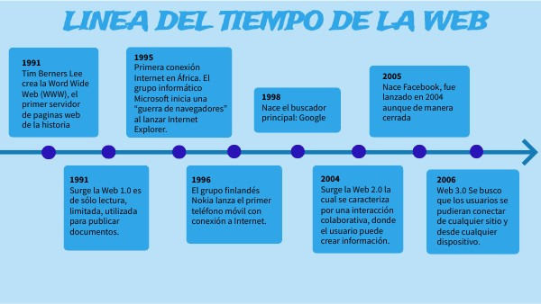

Línea del tiempo
Línea temporal sobre el diseño web y su evolución a lo largo de los años.

Línea temporal sobre el diseño web y su evolución a lo largo de los años.
Observamos lo fundamental del diseño de interfaz y cómo aplicarlos en proyectos web.
Conocemos los principios del diseño interactivo, sus ventajas e inconvenientes.

Todas las leyes de Gestalt y cómo se aplican al diseño visual.
Exploramos los elementos estructurales del diseño web y su importancia en la creación de interfaces efectivas.
CMS
Las hojas de estilo CSS se aplican en un orden específico, conocido como "cascada".

Estilizar encabezados y párrafos utilizando CSS para mejorar la presentación del contenido web.

Uso de la etiqueta <style> para incluir CSS directamente en el documento HTML.
Uso de la etiqueta <link> para incluir archivos CSS externos en el documento HTML.

Uso de selectores básicos en CSS para aplicar estilos a elementos HTML.

Uso de selectores básicos en CSS para aplicar estilos a elementos HTML.
Uso de selectores básicos en CSS para aplicar estilos a elementos HTML.
Uso de combinadores en CSS para aplicar estilos a elementos HTML.

Uso de selectores básicos en CSS para aplicar estilos a elementos HTML.
Regla que determina qué estilos se aplican a un elemento cuando hay múltiples reglas en él.

Permite que los estilos se apliquen a elementos hijos a partir de sus elementos padres.
Uso de selectores básicos en CSS para aplicar estilos a elementos HTML.

Fundamentales para crear diseños responsivos y adaptables.